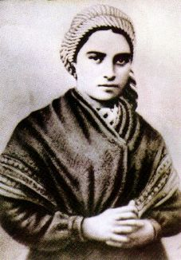

"COMEMORAÇÃO DAS APARIÇÕES DE NOSSA SENHORA EM LOURDES"
=150 ANOS=
11/Fevereiro/1858 - 11/Fevereiro/2008
Sua Santidade o Papa Bento XVI, assinou o decreto “Penitenciaria Apostólica” concedendo Indulgência Plenária a todas as pessoas que cumprirem as seguintes exigências:
1 – Entre os dias 8 de Dezembro de 2007 e 8 de Dezembro de 2008 visitar na França:
1.1 – A Pia Batismal utilizada para o Batismo de Santa Bernadete Soubirous.
1.2 – A Casa Residencial da Família Soubirous.
1.3 – A Gruta de Massabielle (das Aparições).
1.4 – A Capela onde Bernadete recebeu a Primeira Comunhão.
Em cada local, parar durante alguns minutos e meditar sobre a misericórdia Divina. Concluir a visita rezando um CREDO, um PAI NOSSO e uma Jaculatória a NOSSA SENHORA.
2 – Entre os dias 2 e 11 de Fevereiro de 2008, visitar piedosamente, em qualquer cidade do mundo ou na sua cidade residencial, uma Igreja, Oratório, Gruta ou lugar digno que tenha a Imagem de NOSSA SENHORA DE LOURDES, solenemente exposta à veneração pública, e diante Dela, participar de um ato Marial (Reza do Terço, alguma homenagem, ou Santa Missa) e terminar a visita rezando um CREDO, um PAI NOSSO e uma Jaculatória a NOSSA SENHORA.
3 – Os Idosos e Doentes que por uma razão legítima não puderem sair de casa para cumprir as exigências do Decreto, poderão receber a Indulgência Plenária em sua própria casa, se tiverem o desejo de rejeitar o pecado e a intenção de cumprir, assim que possível três condições: Confessar, Comungar e Rezar pelo Papa. E concluindo, deverá fazer, entre os dias 2 e 11 de Fevereiro de 2008, uma “Visita Espiritual”, aos locais relacionados com as Aparições de Lourdes, recitando um CREDO, um PAI NOSSO, uma Jaculatória a NOSSA SENHORA e oferecendo com confiança a DEUS, por meio da VIRGEM MARIA, as doenças e dificuldades de sua vida.
4 – Para facilitar a sua “Visita Espiritual” anexamos a seguir imagens dos locais mencionados. Assim poderá contempla-los aqui e fazer as orações solicitadas.
Casa onde morava Bernadete - Gruta com imagem de N.SENHORA

Santa Bernadete